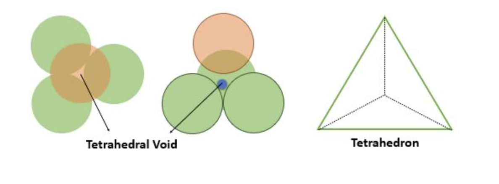
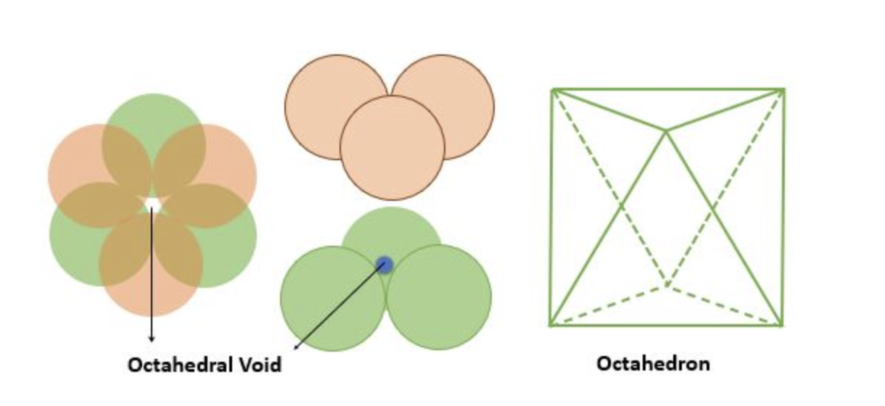
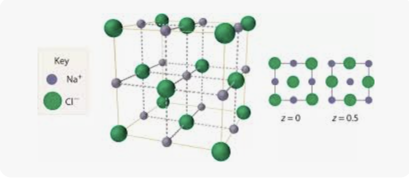

| Hydride type | Typical examples |
|---|---|
| Electron-deficient hydrides | \(\mathrm{B_2H_6,\ AlH_3}\) |
| Electron-precise hydrides | \(\mathrm{CH_4,\ SiH_4}\) |
| Electron-rich hydrides | \(\mathrm{H_2O,\ NH_3,\ H_2S,\ HCl}\) |
| Term | Examples |
|---|---|
| Artificial sweetening agents | \(\mathrm{Saccharin,\ Aspartame,\ Sucralose}\) |
| Food preservatives | \(\mathrm{Table\ salt,\ Sugar\ syrup}\) |
| Antacids | \(\mathrm{Omeprazole,\ Lansoprazole}\) |
| Antibiotics | \(\mathrm{Penicillin,\ Chloramphenicol,\ Sulphadiazine}\) |
| Antiseptics | \(\mathrm{Dettol,\ Bithional,\ Tincture\ of\ iodine}\) |
| Antihistamines | \(\mathrm{Dimetane,\ Terfenadine}\) |
| Analgesics | \(\mathrm{Morphine,\ Codeine,\ Aspirin,\ Ibuprofen}\) |
| Tranquilizers | \(\mathrm{Luminal,\ Seconal,\ Barbituric\ acid}\) |
| Priority | Functional group | Suffix / Prefix | General structure |
|---|---|---|---|
| 1 | \(\mathrm{-COOH}\) Carboxylic acid |
Suffix: \(\mathrm{-oic\ acid}\) Prefix: carboxy |
|
| 2 | \(\mathrm{-SO_3H}\) Sulphonic acid |
Suffix: \(\mathrm{-sulphonic\ acid}\) Prefix: sulpho |
|
| 3 | \(\mathrm{(RCO)_2O}\) Acid anhydride | Suffix: anhydride | |
| 4 | \(\mathrm{-COOR}\) Ester |
Suffix: \(\mathrm{alkyl\ alkanoate}\) Prefix: alkoxycarbonyl |
|
| 5 | \(\mathrm{-COX}\) Acid halide |
Suffix: \(\mathrm{-oyl\ halide}\) Prefix: haloformyl / halocarbonyl |
|
| 6 | \(\mathrm{-CONH_2}\) Amide |
Suffix: \(\mathrm{-amide}\) Prefix: carbamoyl / carboxamido |
|
| 7 | \(\mathrm{-CN}\) Nitrile | Suffix: \(\mathrm{-nitrile}\) Prefix: cyano |
|
| 8 | \(\mathrm{-NC}\) Isocyanide / Isonitrile | Suffix: isonitrile Prefix: isocyano |
|
| 9 | \(\mathrm{-CHO}\) Aldehyde | Suffix: \(\mathrm{-al}\) Prefix: formyl |
|
| 10 | \(\mathrm{>C=O}\) Ketone | Suffix: \(\mathrm{-one}\) Prefix: oxo / keto |
|
| 11 | \(\mathrm{-OH}\) Alcohol / Phenol |
Suffix: \(\mathrm{-ol}\) / phenol Prefix: hydroxy |
|
| 12 | \(\mathrm{-SH}\) Thiol |
Suffix: \(\mathrm{-thiol}\) Prefix: mercapto / sulphanyl |
|
| 13 | \(\mathrm{-NH_2}\) Amine | Suffix: \(\mathrm{-amine}\) Prefix: amino |
|
| 14 | Epoxy | Prefix: epoxy | |
| 15 | \(\mathrm{R-O-R}\) Ether | Prefix: alkoxy | |
| 16 | \(\mathrm{-NO_2}\) Nitro | Prefix: nitro | |
| 17 | \(\mathrm{-F,\ -Cl,\ -Br,\ -I}\) Halo | Prefix: fluoro, chloro, bromo, iodo |